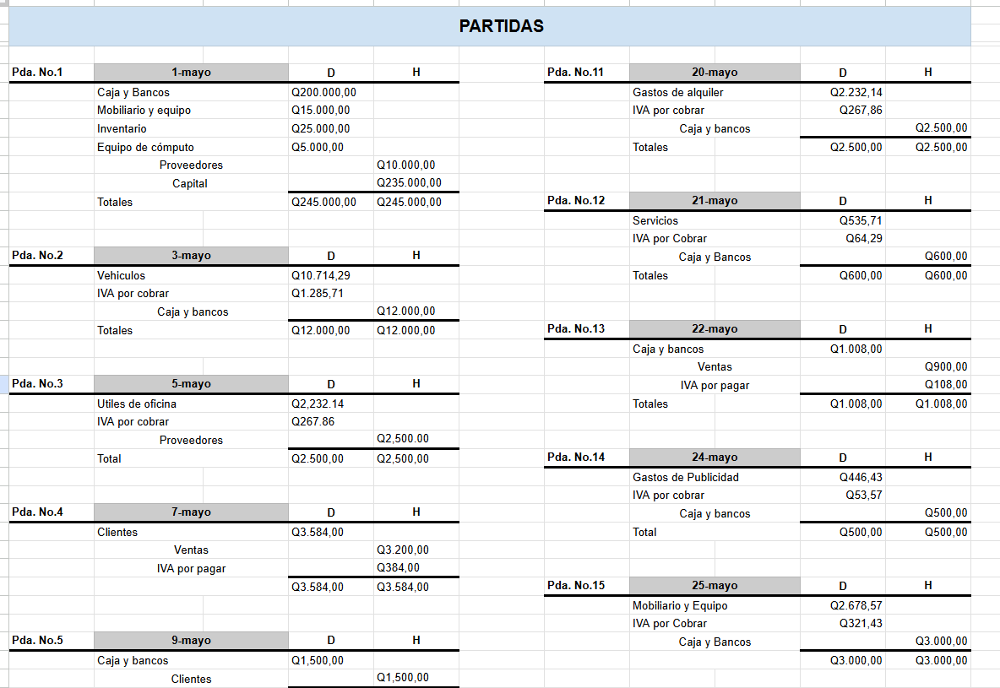
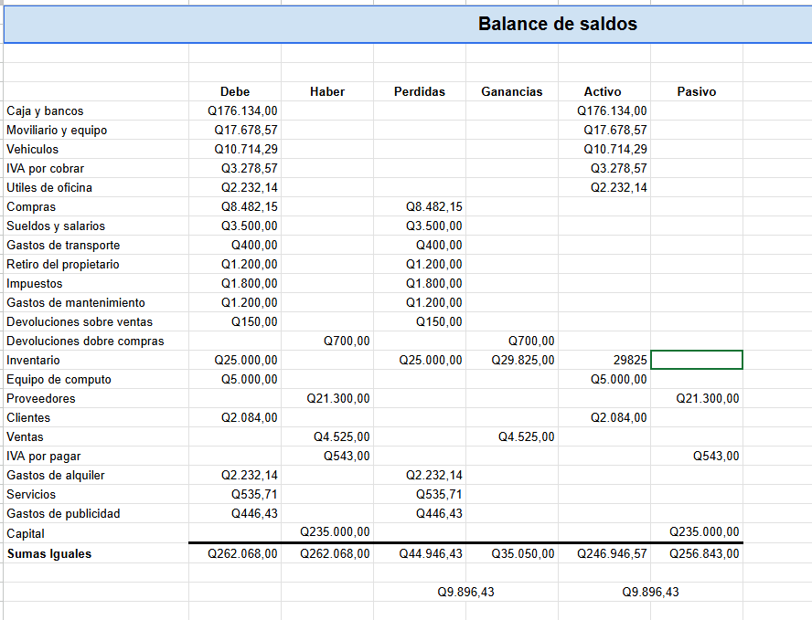

Descripción: El proyecto colaborativo tiene como finalidad aplicar los conocimientos contables en un entorno práctico y organizado. Para ello, se conforman grupos de aproximadamente cinco integrantes, quienes deben asumir roles específicos que aseguren la distribución equitativa de responsabilidades. Entre las tareas principales se incluyen la definición de operaciones comerciales, el registro en el Libro Diario, el traslado al Libro Mayor y la elaboración de los Estados Financieros. Asimismo, cada grupo debe seleccionar una empresa ficticia con nombre y actividad comercial definida, sobre la cual se diseñan al menos veinte operaciones habituales que reflejen su dinámica contable. Todas las operaciones se registran en la aplicación Excel, utilizando partidas de Diario, traslados al Mayor y la construcción de Estados Financieros completos. Finalmente, el grupo debe presentar el proyecto en la última semana de clases, compartirlo en una aplicación en la nube y realizar una exposición formal en sesión. El coordinador del grupo es el responsable de subir el documento oficial, garantizando la organización y cumplimiento de los requisitos establecidos.
Los objetivos de este proyecto colaborativo se enfocan en aplicar los conocimientos contables en un entorno práctico y organizado, mediante la conformación de grupos de aproximadamente cinco integrantes que asumen roles específicos para asegurar una distribución equitativa de responsabilidades. Se busca además definir operaciones comerciales, registrarlas en el Libro Diario, trasladarlas al Libro Mayor y elaborar los Estados Financieros completos en la aplicación Excel, garantizando un proceso contable claro y estructurado. Otro propósito es seleccionar una empresa ficticia con nombre y actividad comercial definida, sobre la cual se diseñen al menos veinte operaciones habituales que reflejen su dinámica contable. Finalmente, se pretende presentar el proyecto en la última semana de clases, compartirlo en una aplicación en la nube y realizar una exposición formal en sesión, asegurando la organización, el cumplimiento de los requisitos establecidos y el fortalecimiento de las competencias prácticas en el área contable.

